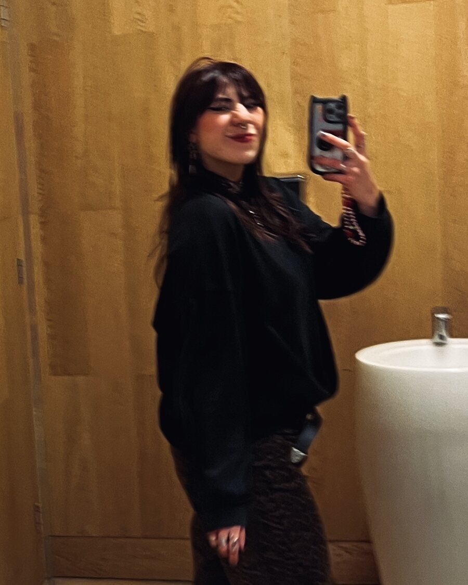

Werk
Een selectie uit mijn graduaat Digitale Vormgeving en eigen projecten: van inkttekening en poster tot een volledige website. Klik op een project om alle beelden te zien.

Over mij
Tekenen, schilderen, animeren: als ik vrije tijd heb, ben ik iets aan het maken. Al op jonge leeftijd ben ik via games de online wereld in gedoken, en sindsdien laat die me niet meer los. Films, series en games zijn nog altijd mijn grootste inspiratiebron, en ik vind het heerlijk om ze op mijn eigen manier te verbeelden.
Ik volg op de voet wat AI vandaag kan en werk er ook graag mee samen. Ik wil vooral blijven groeien: nieuwe technieken leren en ze meteen toepassen in mijn werk. Later zie ik mezelf als digitaal grafisch ontwerper in een team waar ik posters, logo's en promovideo's maak.
- Creativiteit
- Betrokkenheid
- Passie
- Kennis
- Humor
Opleiding
- Graduaat Digitale VormgevingAP Hogeschool Antwerpen · 2025 – heden
- Beeldende Vormingde!Kunsthumaniora Antwerpen · 5de – 6de middelbaar · 2021 – 2023 · diploma
- Moderne Wetenschappen-Talen1ste – 4de middelbaar · 2017 – 2021
Ervaring
- Studentenjob · Delhaize3 jaar · kassa, klantvriendelijkheid, flexibel, teamwerk, stressbestendig, shiften
- Studentenjob · Kinepolis Antwerpen1 jaar · klantvriendelijkheid, teamwerk, stressbestendig, werken volgens schema, shiften
Programma's
- After Effects★★★★★
- Photoshop★★★★★
- Illustrator★★★★★
- HTML & CSS★★★★★
- Vibecoden★★★★★
- InDesign★★★★★
- Groeivermogen★★★★★
Persoonlijk
- Geboren op 1 juni 2005
- Woont in Antwerpen
- valentina.schechter@gmail.com
Talen
- Nederlands★★★★★
- Engels★★★★★
- Spaans★★★★★
- Frans★★★★★
Sterktes
- Harde werker
- Leert snel
- Zelfstandig
- Betrouwbaar
- Geduldig
Laten we iets maken
- E-mailvalentina.schechter@gmail.com
- WoonplaatsAntwerpen